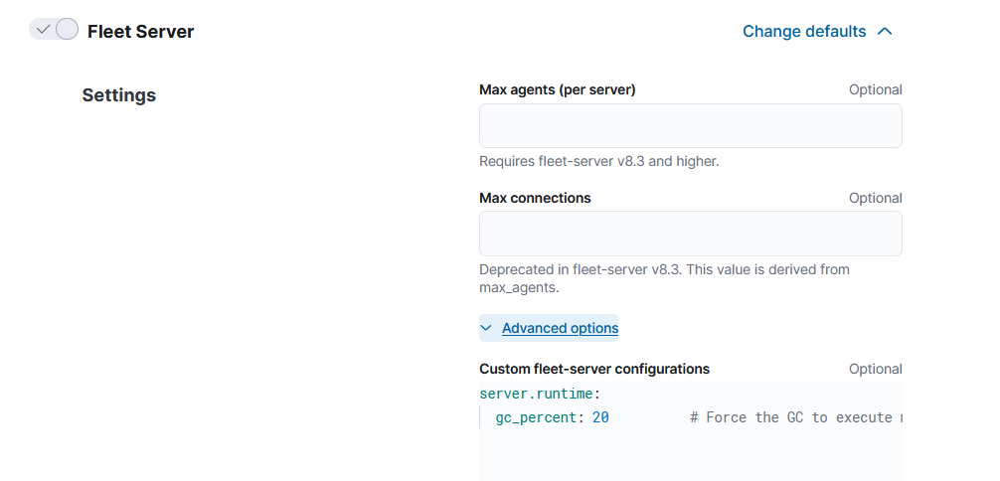

Fleet Server scalabilityedit
This page summarizes the resource and Fleet Server configuration requirements needed to scale your deployment of Elastic Agents. To scale Fleet Server, you need to modify settings in your deployment and the Fleet Server agent policy.
First modify your Fleet deployment settings in Elastic Cloud:
- Log in to Elastic Cloud and go to your deployment.
- Under Deployments > deployment name, click Edit.
-
Under Integrations Server:
- Modify the compute resources available to the server to accommodate a higher scale of Elastic Agents
- Modify the availability zones to satisfy fault tolerance requirements
For recommended settings, refer to Scaling recommendations (Elastic Cloud).

Next modify the Fleet Server configuration by editing the agent policy:
- In Kibana, go to Management > Fleet > Agent Policies. Click the name of the Elastic Cloud agent policy to edit the policy.
-
Open the Actions menu next to the Fleet Server integration and click Edit integration.

-
Under Fleet Server, modify Max Connections and other advanced settings as described in Scaling recommendations (Elastic Cloud).

Advanced Fleet Server optionsedit
The following advanced settings are available to fine tune your Fleet Server deployment.
-
cache -
-
num_counters - Size of the hash table. Best practice is to have this set to 10 times the max connections.
-
max_cost - Total size of the cache.
-
-
server.timeouts -
-
checkin_timestamp -
How often Fleet Server updates the "last activity" field for each agent.
Defaults to
30s. In a large-scale deployment, increasing this setting may improve performance. If this setting is higher than2m, most agents will be shown as "offline" in the Fleet UI. For a typical setup, it’s recommended that you set this value to less than2m. -
checkin_long_poll -
How long Fleet Server allows a long poll request from an agent before
timing out. Defaults to
5m. In a large-scale deployment, increasing this setting may improve performance.
-
-
server.limits -
-
policy_throttle - How often a new policy is rolled out to the agents.
-
checkin_limit.max - Maximum number of agents that can call the checkin API concurrently.
-
checkin_limit.interval - How fast the agents can check in to the Fleet Server.
-
checkin_limit.burst -
Burst of check-ins allowed before falling back to the rate defined by
interval. -
checkin_limit.max_body_byte_size - Maximum size in bytes of the checkin API request body.
-
artifact_limit.max - Maximum number of agents that can call the artifact API concurrently. It allows the user to avoid overloading the Fleet Server from artifact API calls.
-
artifact_limit.interval -
How often artifacts are rolled out. Default of
100msallows 10 artifacts to be rolled out per second. -
artifact_limit.burst - Number of transactions allowed for a burst, controlling oversubscription on outbound buffer.
-
artifact_limit.max_body_byte_size - Maximum size in bytes of the artficact API request body.
-
ack_limit.max - Maximum number of agents that can call the ack API concurrently. It allows the user to avoid overloading the Fleet Server from Ack API calls.
-
ack_limit.interval -
How often an acknowledgment (ACK) is sent. Default value of
10msenables 100 ACKs per second to be sent. -
ack_limit.burst -
Burst of ACKs to accommodate (default of 20) before falling back to the rate
defined in
interval. -
ack_limit.max_body_byte_size - Maximum size in bytes of the ack API request body.
-
enroll_limit.max - Maximum number of agents that can call the enroll API concurrently. This setting allows the user to avoid overloading the Fleet Server from Enrollment API calls.
-
enroll_limit.interval -
Interval between processing enrollment request. Enrollment is both CPU and RAM
intensive, so the number of enrollment requests needs to be limited for overall
system health. Default value of
100msallows 10 enrollments per second. -
enroll_limit.burst -
Burst of enrollments to accept before falling back to the rate defined by
interval. -
enroll_limit.max_body_byte_size - Maximum size in bytes of the enroll API request body.
-
status_limit.max - Maximum number of agents that can call the status API concurrently. This setting allows the user to avoid overloading the Fleet Server from status API calls.
-
status_limit.interval - How frequently agents can submit status requests to the Fleet Server.
-
status_limit.burst - Burst of status requests to accomodate before falling back to the rate defined by interval.
-
status_limit.max_body_byte_size - Maximum size in bytes of the status API request body.
-
upload_start_limit.max - Maximum number of agents that can call the uploadStart API concurrently. This setting allows the user to avoid overloading the Fleet Server from uploadStart API calls.
-
upload_start_limit.interval - How frequently agents can submit file start upload requests to the Fleet Server.
-
upload_start_limit.burst - Burst of file start upload requests to accomodate before falling back to the rate defined by interval.
-
upload_start_limit.max_body_byte_size - Maximum size in bytes of the uploadStart API request body.
-
upload_end_limit.max - Maximum number of agents that can call the uploadEnd API concurrently. This setting allows the user to avoid overloading the Fleet Server from uploadEnd API calls.
-
upload_end_limit.interval - How frequently agents can submit file end upload requests to the Fleet Server.
-
upload_end_limit.burst - Burst of file end upload requests to accomodate before falling back to the rate defined by interval.
-
upload_end_limit.max_body_byte_size - Maximum size in bytes of the uploadEnd API request body.
-
upload_chunk_limit.max - Maximum number of agents that can call the uploadChunk API concurrently. This setting allows the user to avoid overloading the Fleet Server from uploadChunk API calls.
-
upload_chunk_limit.interval - How frequently agents can submit file chunk upload requests to the Fleet Server.
-
upload_chunk_limit.burst - Burst of file chunk upload requests to accomodate before falling back to the rate defined by interval.
-
upload_chunk_limit.max_body_byte_size - Maximum size in bytes of the uploadChunk API request body.
-
Scaling recommendations (Elastic Cloud)edit
The following tables provide resource requirements and scaling guidelines based on the number of agents required by your deployment:
Resource requirements by number of agentsedit
Number of Agents |
Fleet Server Memory |
Fleet Server vCPU |
Elasticsearch Hot Tier |
2,000 |
2GB |
up to 8 vCPU |
16GB x2 RAM | 4 vCPU x2 |
5,000 |
4GB |
up to 8 vCPU |
16GB x2 RAM | 4 vCPU x2 |
10,000 |
8GB |
up to 8 vCPU |
64GB x2 RAM | 16 vCPU x2 |
15,000 |
8GB |
up to 8 vCPU |
128GB x2 RAM | 32 vCPU x2 |
25,000 |
8GB |
up to 8 vCPU |
128GB x2 RAM | 32 vCPU x2 |
50,000 |
8GB |
up to 8 vCPU |
192GB x2 RAM | 48 vCPU x2 |
75,000 |
8GB |
up to 8 vCPU |
192GB x2 RAM | 48 vCPU x2 |
100,000 |
8GB x2 |
8 vCPU x2 |
256GB x2 RAM | 64 vCPU x2 |